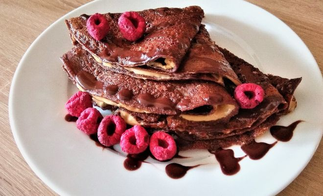

Čokoládové palacinky s malinami a arašidovým maslom

Opis
Palacinky z celozrnnej špaldovej múky s horkou čokoládou, arašidovým maslom a lyofilizovanými malinami.
Ingrediencie
- 200g múka celozrnná špaldová jemne mletá
- 300 ml mlieko
- 2 ks vajcia
- 50g horká čokoláda 78% (do cesta)
- 1 ČL kryštálový cukor
- maslo na vyprážanie
- horká čokoláda 78% (na poliatie)
- arašidové maslo
- čerstvé maliny
Postup
- V mikrovlnke rozpustíme na kocky nalámanú čokoládu a necháme pri izbovej teplote vychladnúť. Môžeme rozmiešať aj s trochou vlažného mlieka.
- Do nádoby nasypeme preosiatu múku, cukor a premiešame.
- Do suchej zmesi za stáleho miešania metličkou prilejeme asi 1 dl mlieka, kým nedostaneme hustú hladkú kašu bez hrudiek. Potom postupne pridávame ostatné mlieko a miešame, kým kaša dostatočne nezredne.
- Nakoniec do palacinkového cesta pridáme vajcia so štipkou soli, rozpustenú čokoládu a metličkou dohladka prešľaháme.
- Na panvici na rozohriatom masle vyprážame z palacinkového cesta z oboch strán tenké chrumkavé palacinky.
- Hotové palacinky necháme trochu ochladnúť a potom ich natrieme arašidovým maslom, zložíme do vejárika, polejeme rozpustenou čokoládou a ozdobíme malinami. Dobrú chuť!